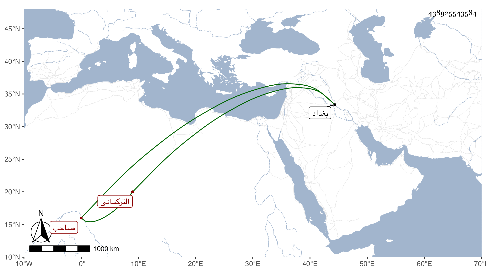

0902Sakhawi.DawLamic.ITO20230111-ara1.EIS1600.438925543584
Biography ID: 438925543584
111
بير بضع بن جهاتشاه بن قرا يوسف بن قرا محمد التركماني صاحب بغداد حاصره أبوه فيها زيادة على سنتين إلى أن عجز وسلمها فيما قيل له مع تقادم كثيرة فأقره أبوه عليها ورجع إلى بلاده فحسن له بعض أتباعه الاستمرار على مشاققته وانه إنما أذعن له عجزا وغلبة فندب إليه ولده الآخر محمد شقيق هذا وتصادما فقتل صاحب الترجمة وجهز برأسه إلى أبيه وذلك في ثاني ذي القعدة سنة سبعين وهو في الكهولة وقتل معه من عساكره نحو أربعة آلاف نفس صبرا .
